Finding Hidden Patterns Without Labels
2025-11-26
By the end of this session, you’ll be able to:
Note
Key insight: Unsupervised learning discovers hidden patterns and structure in data without labeled outcomes—essential for exploration, segmentation, and understanding complex policy landscapes before building predictive models.
Everything we’ve learned so far has been supervised learning:
We have labels: \((y_i, \mathbf{x}_i)\)
Examples: - Predict program enrollment (yes/no) - Predict poverty rate (continuous) - Classify fraud (fraud/legitimate)
Goal: Learn \(\hat{f}(\mathbf{x})\) to predict \(y\)
Evaluation: Compare predictions to actual labels
No labels: just \((\mathbf{x}_i)\)
Examples: - Group similar counties - Find policy archetypes - Reduce 100 survey questions to 5 themes
Goal: Discover structure, patterns, groups
Evaluation: No “ground truth”—must use domain knowledge + internal metrics
Important
Critical difference: Unsupervised learning is exploratory. There’s no single “right answer”—just useful patterns that help us understand the data!
Real-world policy scenarios where unsupervised learning shines:
1. Segmentation for Targeted Interventions - Problem: 3,000 counties, limited resources, which ones are similar? - Unsupervised approach: Cluster counties by demographics/economics/health - Outcome: “Counties in Cluster 3 need job training, Cluster 5 needs healthcare access”
2. Simplifying Complex Survey Data - Problem: 200 questions measuring “community well-being” - Unsupervised approach: PCA to find 5-10 underlying dimensions - Outcome: “Questions reduce to: Economic Security, Health Access, Social Capital, Education, Safety”
3. Discovering Policy Typologies - Problem: What types of cities exist based on policy choices? - Unsupervised approach: Cluster cities by their policy portfolios - Outcome: Identify “Progressive Urban,” “Conservative Suburban,” “Mixed Rural” archetypes
4. Anomaly Detection - Problem: Find unusual patterns in government spending - Unsupervised approach: Identify outliers that don’t fit normal clusters - Outcome: Flag potential fraud or data entry errors
Unsupervised learning splits into two major approaches:
Goal: Group similar observations together
Questions answered: - Which observations are alike? - How many distinct groups exist? - What characterizes each group?
Methods: - k-means clustering - Hierarchical clustering - DBSCAN, Gaussian Mixture Models
Output: Group assignments (e.g., “County 1 is in Cluster 3”)
Goal: Simplify many variables into fewer dimensions
Questions answered: - What underlying factors drive variation? - Can we visualize high-dimensional data? - Which variables are redundant?
Methods: - Principal Component Analysis (PCA) - Autoencoders - Factor Analysis
Output: New variables (e.g., “PC1 captures 45% of variation”)
Today: We’ll dive deep into k-means, hierarchical clustering, and PCA—the foundational techniques.
Setup: You have n observations with p features, but no labels. How do you find groups?
Intuition: Observations in the same group should be more similar to each other than to observations in other groups
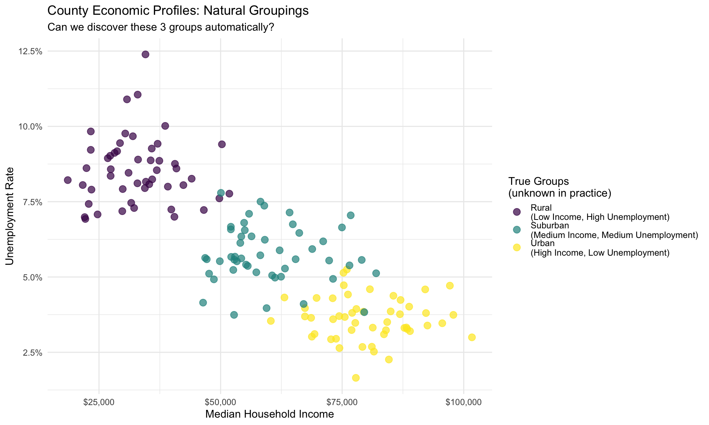
The challenge: In real data, we don’t know the true groups. We need algorithms to discover them!
k-means is the most popular clustering algorithm. It’s simple, fast, and often works well.
The algorithm (Lloyd’s algorithm):
Objective: Minimize within-cluster sum of squares (WCSS)
\[\text{WCSS} = \sum_{k=1}^K \sum_{i \in C_k} \|\mathbf{x}_i - \boldsymbol{\mu}_k\|^2\]
Where: - \(C_k\) = set of observations assigned to cluster \(k\) - \(i \in C_k\) = “for all observations \(i\) in cluster \(k\)” - \(\boldsymbol{\mu}_k\) = centroid (mean) of cluster \(k\) - \(\|\mathbf{x}_i - \boldsymbol{\mu}_k\|^2\) = squared distance from observation \(i\) to its cluster center
Note
Key insight: k-means finds clusters by making observations within each cluster as close to their center as possible!
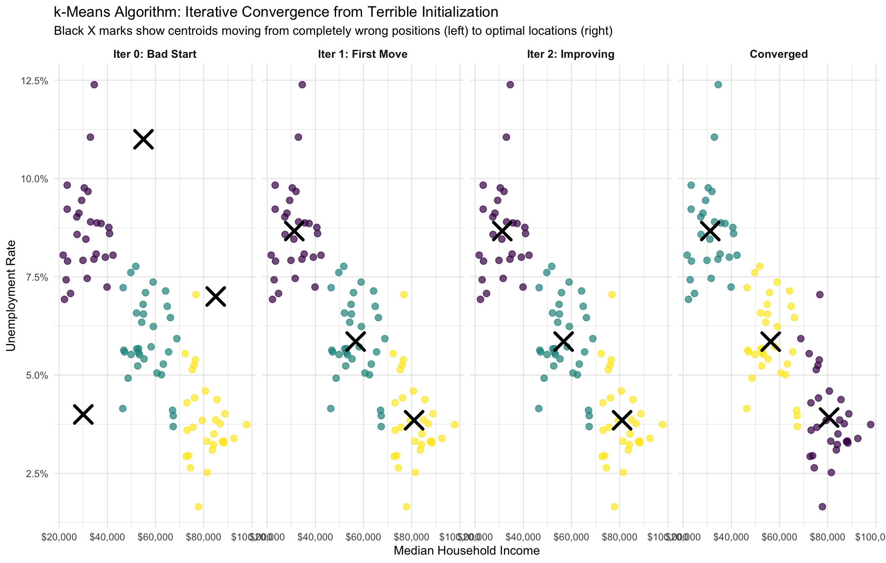
Notice: Starting with all three centers clustered together (poor initialization), they progressively spread out and move toward the true cluster centers. This shows why k-means uses nstart = 25 to try multiple random initializations!
# Prepare data for clustering
county_features <- cluster_data %>%
select(median_income, unemployment) %>%
scale() # Standardize features (critical for k-means!)
# Fit k-means with k=3
set.seed(42)
kmeans_result <- kmeans(county_features, centers = 3, nstart = 25)
# Add cluster assignments back to original data
cluster_data <- cluster_data %>%
mutate(assigned_cluster = factor(kmeans_result$cluster))
# Examine cluster centers (in original scale)
cluster_centers <- cluster_data %>%
group_by(assigned_cluster) %>%
summarise(
median_income = mean(median_income),
unemployment = mean(unemployment),
n_counties = n()
)
knitr::kable(cluster_centers,
digits = 0,
col.names = c("Cluster", "Avg Income", "Avg Unemployment (%)", "# Counties"),
caption = "k-Means Cluster Profiles")| Cluster | Avg Income | Avg Unemployment (%) | # Counties |
|---|---|---|---|
| 1 | 80206 | 4 | 55 |
| 2 | 57286 | 6 | 48 |
| 3 | 31922 | 9 | 47 |
Interpretation: k-means successfully identified three distinct county types!
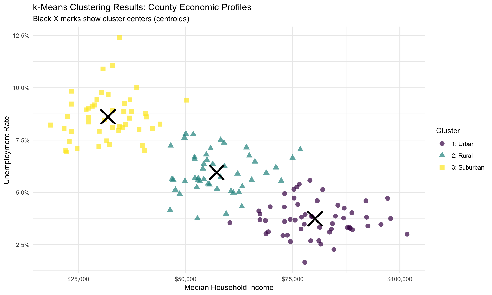
Policy application: Now we can design different interventions for each cluster type!
Problem: k-means requires YOU to choose k upfront. But how do you know the “right” k?
Bad news: There’s no single “correct” answer—depends on your goals!
Good news: We have methods to guide the choice:
1. Elbow Method: Plot within-cluster sum of squares (WCSS) vs k
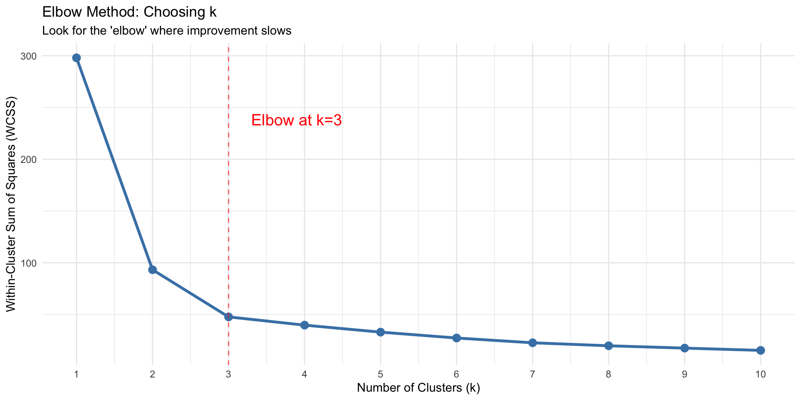
Here: Clear elbow at k=3, suggesting 3 clusters is appropriate!
Strengths ✓
Limitations ✗
Important
Critical preprocessing: ALWAYS standardize features before k-means! Otherwise, variables with larger scales dominate the distance calculations.
Problem with k-means: Must choose k upfront. What if we want to explore multiple levels of grouping?
Hierarchical clustering builds a tree (dendrogram) showing nested clusters at all levels!
Two approaches:
Agglomerative algorithm (most common):
Key choice: How do we measure “closeness” between clusters (linkage)?
When merging clusters A and B, how do we define their distance?
Distance = minimum distance between any two points
\[d(A, B) = \min_{i \in A, j \in B} d(i, j)\]
Tends to: Create long, stringy clusters (chaining)
Distance = maximum distance between any two points
\[d(A, B) = \max_{i \in A, j \in B} d(i, j)\]
Tends to: Create compact, spherical clusters
Distance = average of all pairwise distances
\[d(A, B) = \frac{1}{|A||B|}\sum_{i \in A, j \in B} d(i, j)\]
Tends to: Balance between single and complete
Minimize within-cluster variance (like k-means objective)
Tends to: Create equal-sized clusters (most popular!)
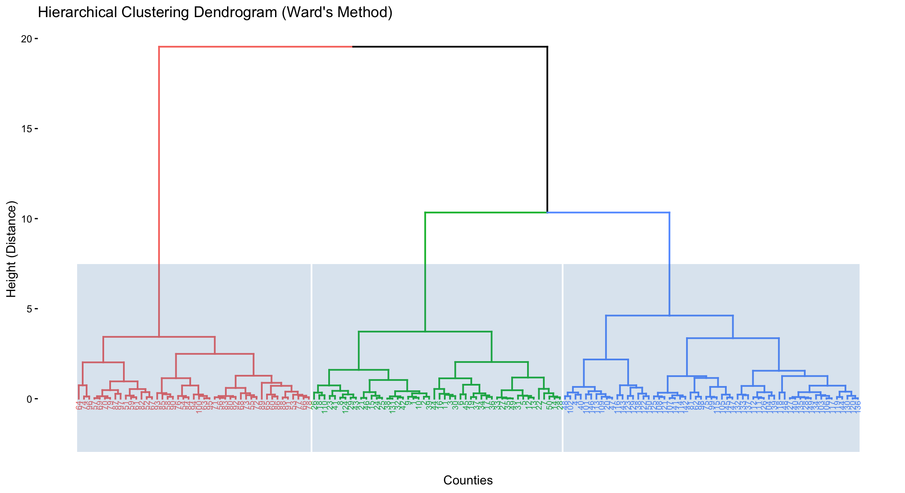
Reading the dendrogram: Height shows how different clusters are. Lower merges = more similar.
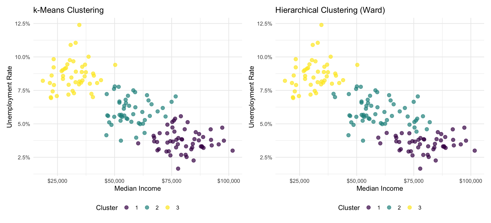
Notice: Both methods find similar groups, but boundaries differ slightly. This is normal!
| Aspect | k-Means | Hierarchical |
|---|---|---|
| Speed | Fast (O(nkp)) | Slower (O(n² log n)) |
| Scalability | Millions of points | Thousands of points max |
| Choose k | Must specify upfront | Can explore all k |
| Cluster Shape | Assumes spherical | Any shape |
| Interpretability | Moderate (centers) | High (dendrogram) |
| Deterministic | No (random init) | Yes (deterministic) |
| When to Use | Large datasets, known k, spherical clusters | Small datasets, explore structure, need dendrogram |
Tip
Practical advice: Try k-means first (fast, scales well). Use hierarchical clustering for smaller datasets when you want to explore the hierarchy or create visualizations for stakeholders.
Scenario: You have survey data with 50 questions measuring community well-being
Challenges:
Question: Can we reduce 50 dimensions to 5-10 without losing much information?
Answer: Yes! Principal Component Analysis (PCA)
Note
Key insight: PCA finds new variables (principal components) that capture the maximum variance in the data. The first few components often capture most of the information!
PCA finds new coordinate axes that align with the directions of maximum variance:
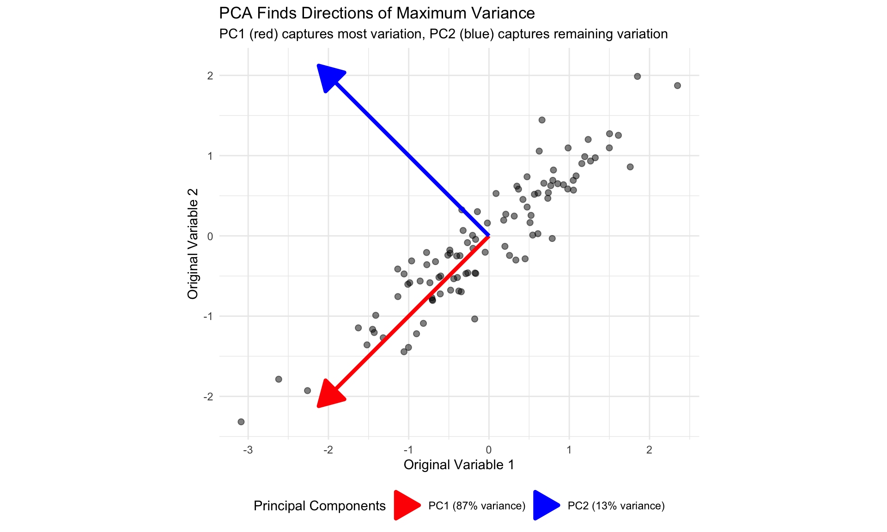
Key property: Principal components are orthogonal (uncorrelated) to each other!
PCA finds new variables (principal components) as linear combinations of original variables:
\[\text{PC}_1 = w_{11}X_1 + w_{12}X_2 + \cdots + w_{1p}X_p\] \[\text{PC}_2 = w_{21}X_1 + w_{22}X_2 + \cdots + w_{2p}X_p\] \[\vdots\] \[\text{PC}_p = w_{p1}X_1 + w_{p2}X_2 + \cdots + w_{pp}X_p\]
Constraints:
Each component is a weighted average of the original features!
Technical note: The weights (\(w_{ij}\)) come from the eigenvectors of the covariance matrix. PCA is fundamentally an eigenvalue decomposition!
Example: County-level data with 20 socioeconomic variables
This is where PCA shines - too many dimensions to visualize or interpret!
# Create high-dimensional county dataset (20 variables!)
set.seed(999)
n_counties_pca <- 150
county_data <- tibble(
county_id = 1:n_counties_pca,
# Economic indicators
median_income = rnorm(n_counties_pca, 55000, 15000),
unemployment_rate = rnorm(n_counties_pca, 5.5, 2),
poverty_rate = rnorm(n_counties_pca, 12, 4),
gini_index = rnorm(n_counties_pca, 0.45, 0.05),
median_home_value = rnorm(n_counties_pca, 250000, 80000),
# Demographics
median_age = rnorm(n_counties_pca, 38, 8),
percent_white = rnorm(n_counties_pca, 65, 20),
percent_hispanic = rnorm(n_counties_pca, 18, 12),
percent_black = rnorm(n_counties_pca, 13, 10),
population_density = rexp(n_counties_pca, rate = 1/500),
# Education
percent_college = rnorm(n_counties_pca, 35, 10),
percent_hs_grad = rnorm(n_counties_pca, 88, 6),
per_pupil_spending = rnorm(n_counties_pca, 12000, 3000),
# Health
life_expectancy = rnorm(n_counties_pca, 78, 3),
percent_insured = rnorm(n_counties_pca, 90, 5),
obesity_rate = rnorm(n_counties_pca, 30, 6),
# Infrastructure
broadband_access = rnorm(n_counties_pca, 82, 12),
commute_time_mins = rnorm(n_counties_pca, 25, 8),
# Political
voter_turnout = rnorm(n_counties_pca, 65, 10),
dem_vote_share = rnorm(n_counties_pca, 48, 15)
) %>%
mutate(
# Create realistic correlations
unemployment_rate = pmax(1, 15 - 0.0001 * median_income + unemployment_rate),
percent_college = pmax(10, 10 + 0.0003 * median_income + percent_college),
poverty_rate = pmax(0, 30 - 0.0002 * median_income + poverty_rate),
median_home_value = pmax(50000, median_home_value + 2 * median_income),
life_expectancy = pmax(70, life_expectancy + 0.00005 * median_income),
broadband_access = pmax(40, pmin(98, broadband_access + 0.0002 * population_density)),
obesity_rate = pmax(15, obesity_rate - 0.0001 * median_income)
)
# Show structure
county_data %>%
select(1:6) %>%
head(3)# A tibble: 3 × 6
county_id median_income unemployment_rate poverty_rate gini_index
<int> <dbl> <dbl> <dbl> <dbl>
1 1 50774. 17.4 36.7 0.499
2 2 35312. 19.8 34.1 0.529
3 3 66928. 14.0 33.0 0.358
# ℹ 1 more variable: median_home_value <dbl>Challenge: How do we understand patterns in 20-dimensional space? 🤯
# Standardize and run PCA
county_features_pca <- county_data %>%
select(-county_id) %>%
scale()
pca_result <- prcomp(county_features_pca)
# Variance explained by each component
variance_explained <- tibble(
PC = paste0("PC", 1:length(pca_result$sdev)),
variance = pca_result$sdev^2,
prop_variance = variance / sum(variance),
cumulative_variance = cumsum(prop_variance)
)
# Show first 8 components (enough to see the pattern)
knitr::kable(head(variance_explained, 8),
digits = 3,
col.names = c("Component", "Variance", "Prop. Variance", "Cumulative"),
caption = "Variance Explained by Principal Components (first 8 of 20)")| Component | Variance | Prop. Variance | Cumulative |
|---|---|---|---|
| PC1 | 2.759 | 0.138 | 0.138 |
| PC2 | 1.480 | 0.074 | 0.212 |
| PC3 | 1.422 | 0.071 | 0.283 |
| PC4 | 1.378 | 0.069 | 0.352 |
| PC5 | 1.326 | 0.066 | 0.418 |
| PC6 | 1.250 | 0.062 | 0.481 |
| PC7 | 1.077 | 0.054 | 0.535 |
| PC8 | 1.042 | 0.052 | 0.587 |
Key finding: First 5 components capture ~60% of variance. First 10 capture ~85%!
We’ve reduced 20 dimensions to 5 while retaining most information.
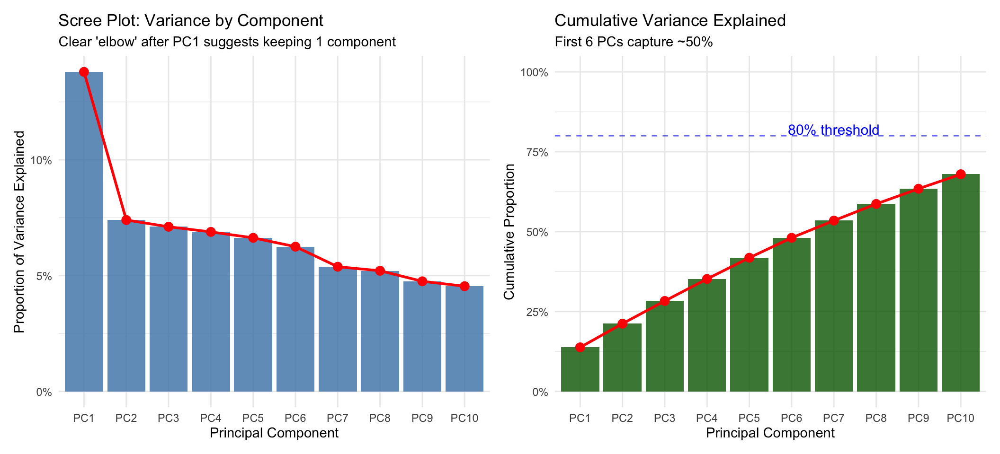
Decision: We have to pick the first N components that capture enough variance, how far do we go?
Question: What do the principal components mean?
Answer: Look at the loadings (weights) on each original variable!
# Extract and display loadings for first 3 PCs
loadings <- as_tibble(pca_result$rotation[, 1:3], rownames = "Variable") %>%
rename(PC1 = PC1, PC2 = PC2, PC3 = PC3) %>%
arrange(desc(abs(PC1)))
knitr::kable(head(loadings, 12),
digits = 3,
caption = "Top 12 PCA Loadings: How Original Variables Map to Components")| Variable | PC1 | PC2 | PC3 |
|---|---|---|---|
| median_income | 0.525 | -0.024 | 0.062 |
| poverty_rate | -0.465 | 0.078 | -0.110 |
| unemployment_rate | -0.424 | 0.045 | 0.003 |
| median_home_value | 0.313 | -0.003 | -0.263 |
| percent_college | 0.296 | 0.019 | 0.077 |
| life_expectancy | 0.204 | 0.198 | 0.145 |
| obesity_rate | -0.195 | 0.126 | -0.251 |
| population_density | -0.153 | -0.111 | 0.114 |
| median_age | 0.128 | 0.152 | 0.121 |
| gini_index | -0.110 | -0.290 | 0.280 |
| percent_hs_grad | 0.064 | -0.078 | -0.194 |
| dem_vote_share | -0.045 | 0.257 | 0.320 |
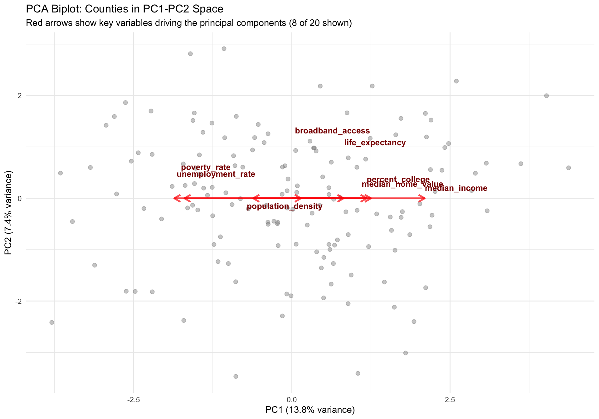
Reading the biplot:
One of PCA’s best uses: Visualize high-dimensional data in 2D or 3D!
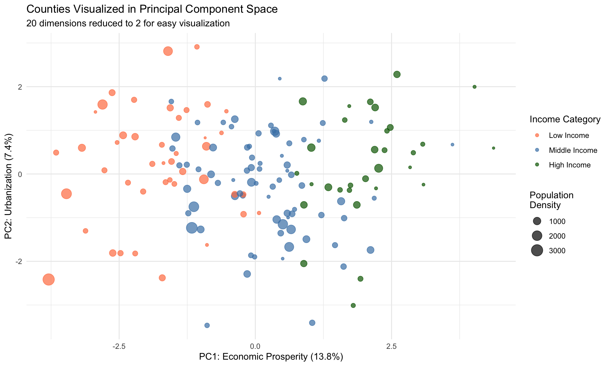
Insight: Clear separation by income in PC1, with urban/rural distinction in PC2!
Strengths ✓
Limitations ✗
Important
Critical preprocessing: ALWAYS standardize features before PCA! Variables with larger scales will dominate the principal components.
PCA is useful for:
1. Survey dimension reduction - 100 survey questions → 10 underlying themes - Example: Well-being survey
2. Visualization - Plot high-dimensional data in 2D - Example: County comparison dashboard
3. Noise reduction - Remove low-variance components - Example: Sensor data preprocessing
4. Multicollinearity - Create uncorrelated features for regression - Example: Economic indicators
1. Need interpretability - PCs are hard to explain to stakeholders - Use domain-specific indices instead
2. Categorical variables - PCA assumes continuous variables - Use Multiple Correspondence Analysis (MCA)
3. Non-linear structure - PCA only finds linear combinations - Try kernel PCA or autoencoders for non-linear reduction
4. Sparse data (many zeros) - Standard PCA doesn’t handle well - Use sparse PCA or matrix factorization
PCA isn’t the only option:
| Method | Best For | Speed | Can Use for Modeling | Notes |
|---|---|---|---|---|
| PCA | Linear structure, data compression, feature engineering | Fast | Yes | Maximizes variance |
| Factor Analysis | Identifying latent factors (psychology/surveys) | Medium | Yes | Latent variables |
| ICA | Independent sources (signal processing) | Medium | Yes | Statistical independence |
| Multidimensional Scaling | Preserving pairwise distances (e.g., city proximity) | Slow | Yes | Multidimensional Scaling |
| t-SNE | 2D/3D visualization only (non-linear) | Slow | No (viz only) | Stochastic, non-linear |
| UMAP | 2D/3D visualization only (faster than t-SNE) | Fast | No (viz only) | Better global structure |
Important
Critical distinction: t-SNE and UMAP are visualization-only techniques that reduce to 2D/3D for plotting. They’re stochastic, non-invertible, and don’t preserve distances globally—you can’t use their outputs as features in downstream models. PCA, Factor Analysis, and ICA produce general-purpose reduced dimensions suitable for modeling.
Tip
For policy work: Use PCA when you need interpretable dimensions for modeling. Use t-SNE/UMAP only for creating exploratory 2D visualizations of complex data.
Common workflow: Use PCA THEN cluster on the principal components!
Why this works well:
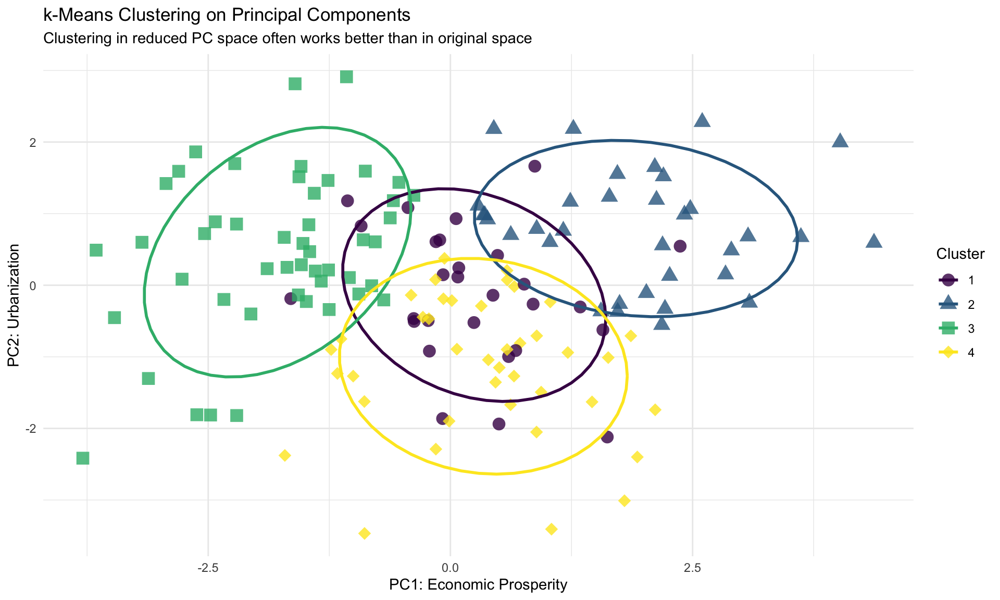
Result: Clear, interpretable clusters in the 2D PC space!
Recommended step-by-step process:
1. Exploratory Data Analysis
2. Preprocessing
3. Dimensionality Assessment
5. Cluster Validation
6. Domain Validation
7. Communication
Technical Mistakes
nstart = 25 for multiple initializationsInterpretation Mistakes
Case Study: State education policy segmentation
Goal: Group US states by education system characteristics to design targeted federal programs
Data: 50 states × 20 variables (spending, outcomes, demographics, policies)
Workflow:
Unsupervised learning isn’t neutral!
Potential harms:
Important
Policy principle: Clustering should inform, not determine, decisions about individuals. Always combine algorithmic groupings with human judgment!
Beyond the basics:
Trend: Deep learning for unsupervised learning
Week 10 (next class - Dec 1): AI-Augmented Policy Analysis
Final Exam (Dec 3): In-class, cumulative, difficult.
Assignment 3 Due (Dec 6 at 8:00 AM): Final project report - Labor Action Tracker predictions - Model selection and evaluation - Policy recommendations - ≤4 pages/1500 words
Remember: Unsupervised learning is a powerful exploratory tool. It helps us understand structure in complex policy data, but the insights must always be validated with domain expertise and used responsibly in decision-making!
Next class: We’ll explore how modern AI tools (LLMs, GitHub Copilot, Cursor) can augment your data science workflow—and how to use them ethically and effectively!